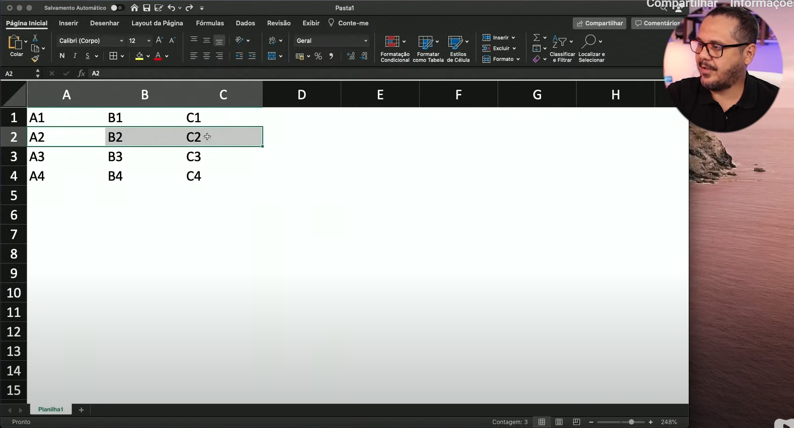

Minha primeira tabela em HTML
A hierarquia de tabelas funciona da seguinte mandeira:
<table> = TABELA
ROW TABLE = LINHAS DE TABELA
TABLE HEADER = CABEÇALHO DE TABELA
TABLE DATA = DADO DE TABELA
</table>
No exemplo do professor Gustavo, ele mostra uma tabela no Excel, veja só:
Criando a nossa primeira tablea:
| A1 | B1 | C1 |
| A2 | B2 | C2 |
| A3 | B3 | C3 |
| A4 | B4 | C4 |
LEMBRETE: depois disso, você vai ter que definir o estilo na folha CSS, porque não funciona mais inline como nós haviamos aprendido lá no colégio. Agora ele fica vermelho, o que indica que vai funcionar, mas ta ERRADO!
LEMBRETE 2: Na versão 5 do HTML, você não precisa fechar as tags <tr> e <tf>, elas são opcionais. Mas cuidado para não errar.
Outra coisa, se você não coloca as Tags certas, o conteúdo vai ficar antes ou depois da tabela. Cuidado com esse erro!
Você consegue personalizar tudo o que quiser dentro da tabela, basta informar o elemento certo.